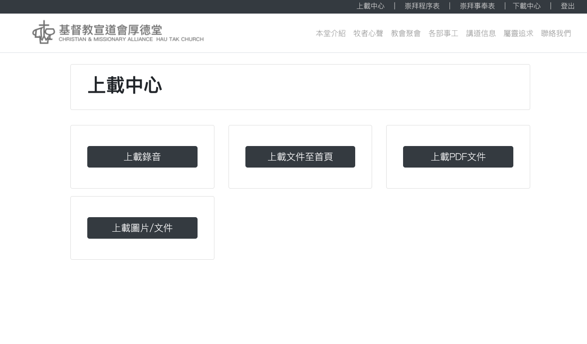

Hau Tak Church Website Development
2018 - Present
Overview
Hau Tak Church Web is a website redesign/ rebuild project. The website was built a long time ago and I decided to change it into a modern design without losing the features it got.
Visit website here >
Hau Tak Church website was built with Bootstrap CSS framework, with PHP, MySQL database as backend.
The structure of the web is based on mutli-pages design. With long navigation bar on top let visitors browser whatever they want easily.
The index page with an eye-catching carousel can provide latest news and annual theme for the visitors.
Also, there are two corners for updating the news and annoucements. Admins can update them and upload documents through the upload center which can only access by the admin.
Another feature required by them was the page for sermon audio files, which will be updated weekly.
I decided to turn them into card-style design which is suitable for both desktop and mobile view (RWD). Admins can easily upload them with form submission in the upload center
Uploading Center
Hau Tak Church site is a dynamic site. Building am uplaoding server for admins to upload documents/images to the site can let them changing the content without any database or coding skills.
Admins have to login in order to access this page. Visitors without password would be able to change to content.
However, there will be a massive changes on the uploading method (Wordpress CMS will be implement) More information will be on the future plan.
Responsive Design
The main difference between the original design and mine was the responsive design. The navigation bar will collapse into a hamburger button like other website does.
Items which fit in a column on desktop view will extend to 100% on mobile view, for better experience for the site visitors
Future Plan
Recently, I planned to rebuild this site into a wordpress based site. The reason why I decided to make this decision is because using wordpress as CMS provide better user-experience for admin who have to constantly update the content.
The approach is start is to create a custom theme from Underscores. Also, I would like to make some changes on the design and the styling of the content to make the site more attractive.